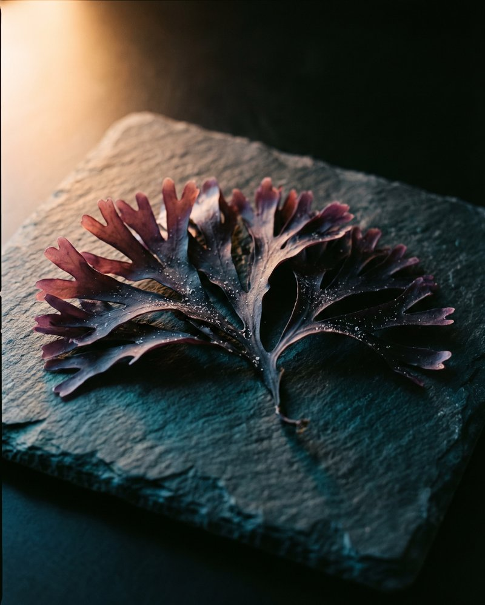
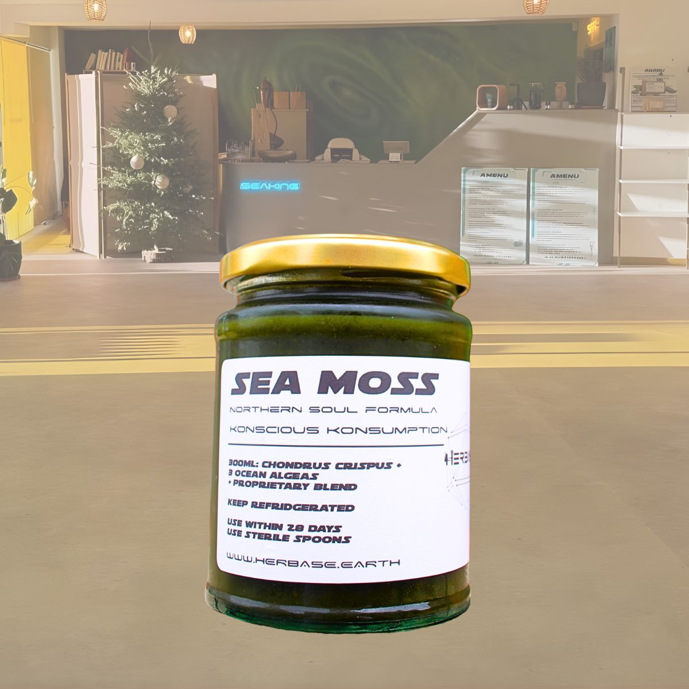
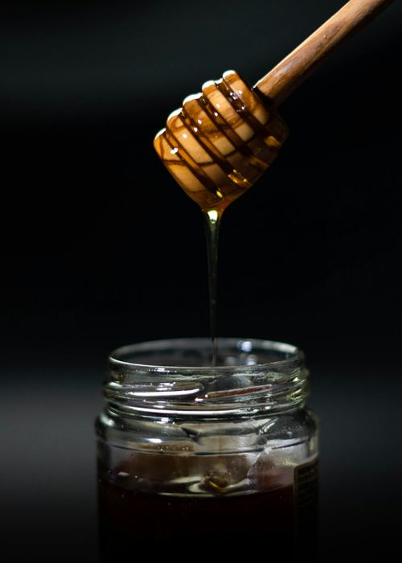
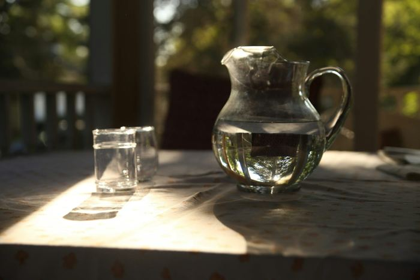
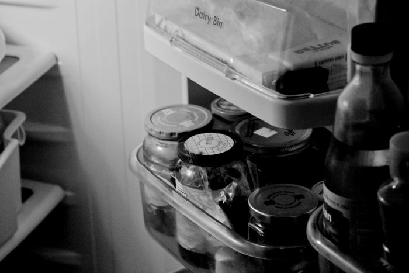
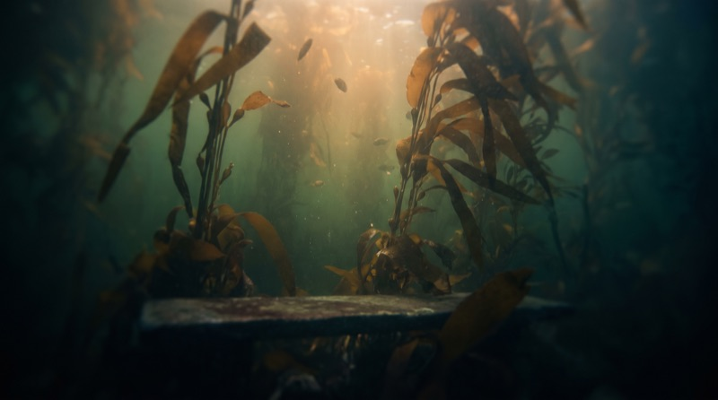
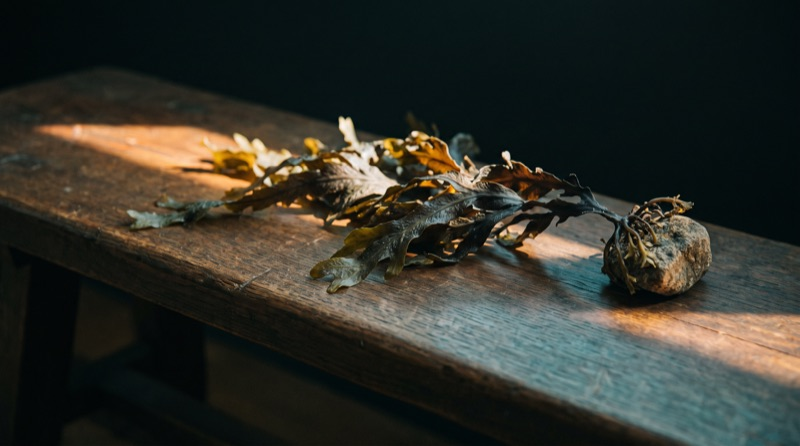
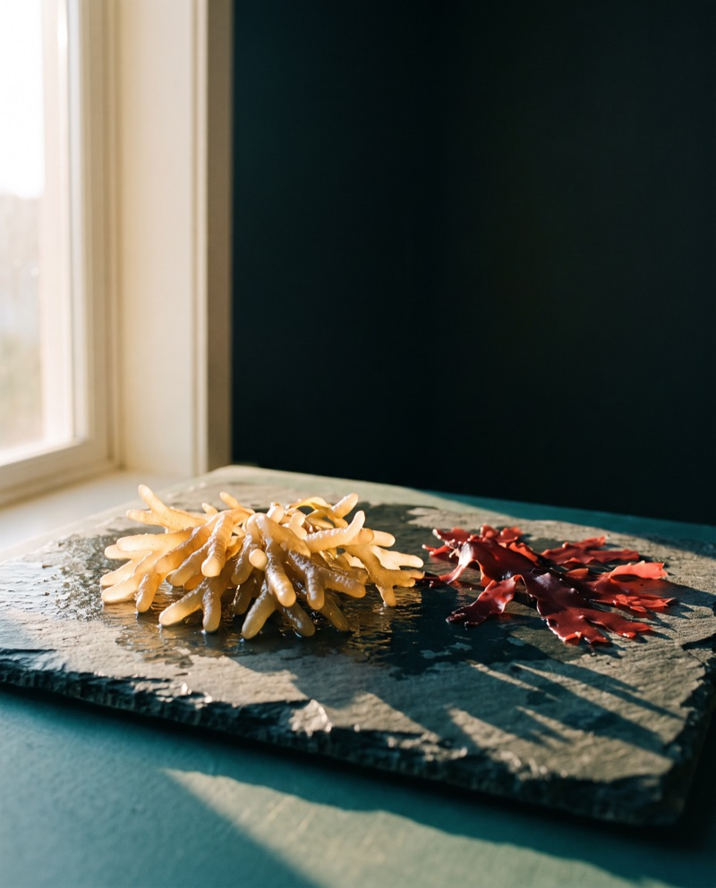

Red · Rhodophyta
Chondrus crispusIrish sea moss
The base of the jar. Cold Atlantic, hand picked off rocks at low tide. The plant the old herbals mean by carrageen.

The 300 ml jar, on the counter at Smithdown Road.
Sea moss · the daily
£50.00500 ml · about 33 tablespoons · £1.52 a day
Not sure it is for you? Ring the shop before you buy, 07946 806533, Tuesday to Sunday. Someone who knows every alga in the jar will pick up.
A Chondrus crispus gel, cold Atlantic, wild harvested. Into that goes the Northern Soul formula: four algae from three families, grouped by pigment. Red, brown and green.
Chondrus crispus · Fucus vesiculosus (bladderwrack) · Laminariales (kelp) · Chlorella. Prepared with water. Nothing else in the jar.
One tablespoon each morning, on an empty stomach. Straight off the spoon and chased with water, or stirred into a warm tea with raw honey, or blended into a smoothie.
Do not double it to catch up. Seaweed carries iodine and iodine has a ceiling. Miss a day, you missed a day.
Fridge, up to 28 days from opening. Freezes well if you will not get through it. Always a clean, dry spoon, and the lid straight back on.
Anyone with an overactive thyroid. If you take thyroid medication, or you are pregnant or nursing, ask your GP or pharmacist first. Not for children.
We do not print a per-spoon iodine figure for the gel, because it varies with the harvest. If you need to count iodine, Seaking prints 75 µg per capsule.
Made and dispatched from 599 Smithdown Road, Liverpool. Orders go out chilled, Tuesday to Sunday. Free UK delivery over £50. Collect from the shop at no charge, 10 to 6, closed Monday.
The routine
Clean, dry spoon. Anything that has been in your mouth brings its own bacteria into the jar.

One tablespoon, first thing, before anything else has gone in.

Chase it with water. Or stir into tea with raw honey, or blend into a smoothie.

Lid on, back in the fridge. Twenty-eight days from opening. Freeze half if you are slow.
What is on the inside
Grouped by pigment, because that is how the sea groups them. Every one named in Latin. Nothing proprietary.

Red · Rhodophyta
The base of the jar. Cold Atlantic, hand picked off rocks at low tide. The plant the old herbals mean by carrageen.
Brown · Ochrophyta
The brown wrack with the air bladders. Grows on the same shore as the Chondrus, one rung up the beach.

Brown · Ochrophyta
The big one. Deep-water forests, the fronds you see swaying in the photograph. Dried and milled for the formula.

Green · Chlorophyta
The green in the jar. A single-celled alga, cultivated not wild, and the one thing here that did not come out of the sea.
Sea moss · 01
Everything we know about what is in the jar, printed. The bit we cannot know yet is printed too.
| Makeup | A Chondrus crispus gel carrying the Northern Soul formula: four algae from three families, grouped by pigment. Red (Rhodophyta), brown (Ochrophyta) and green (Chlorophyta). |
|---|---|
| Base | Chondrus crispus, Irish sea moss, cold Atlantic. Wildcrafted, not pool grown. |
| Formula | Chondrus crispus · Fucus vesiculosus (bladderwrack) · Laminariales (kelp) · Chlorella. The same declared list that goes into Seaking. |
| Prepared with | Water. Nothing else. No preservative, no thickener, no sweetener. |
| Sizes | 300 ml, £34.99 · 500 ml, £50.00. Glass jar. |
| Serving | One tablespoon each morning, on an empty stomach. Straight from the spoon and chased with water, or stirred into tea with raw honey, or blended into a smoothie. |
| Supply | 500 ml is about 33 tablespoons. 300 ml is about 20. Taken daily, the big jar sees out a month. |
| Iodine | Sea moss and kelp both carry iodine, and the amount in a spoon of gel varies with the harvest, so we do not print a per-spoon figure yet. Seaking is the sea moss product where we do: 75 µg per capsule. If you need to count iodine, take that one. |
| Storage | Fridge, up to 28 days from opening. Freezes well for longer. Always a clean, dry spoon. |
| Excipients | None. There is no capsule to fill and no tablet to press, so there is nothing to hide anything in. |
| Suitable for | Vegans. Adults. |
| Not for | Anyone with an overactive thyroid (hyperthyroidism). If you take thyroid medication, or you are pregnant or nursing, ask your GP or pharmacist before starting. |
Contains iodine from seaweed. Do not exceed one tablespoon a day. Speak to your GP or pharmacist before starting any supplement, particularly if you have a thyroid condition or take medication for one. Food supplements should not be used as a substitute for a varied and balanced diet and a healthy lifestyle. Keep out of reach of young children.
Every alga in the jar is named. The prep is water. The serving, the storage and the people who should not take it are all on the sheet. What it does in a body is not something we are permitted to tell you, so we do not.
From Reiss
Plain Chondrus gel is a good thing and I sell it on its own. Northern Soul is what I make when somebody wants the whole shore in one spoon. A red alga from the low-tide rocks, a brown wrack from one rung up the beach, kelp from the deep water past both, and a green freshwater cell to round the colour out.
I group them by pigment because that is how the ocean groups them. Red, brown, green. Three families that split from each other before there were land plants, sitting in one jar. I am not going to tell you what that does for you. I will tell you exactly what is in it, every time, and you can find out for yourself.
The whole shore in one spoon.
Reiss Davies Ausar
599 Smithdown Road, Liverpool
Ours against the label of a typical online listing. Take the list with you.
| On the label | Northern Soul | Typical listing |
|---|---|---|
| Species named in Latin | ✓ | Often "sea moss" |
| Cold-water Chondrus crispus | ✓ | Usually warm-water Eucheuma |
| Wild harvested, not lagoon farmed | ✓ | Rarely stated |
| Prepared with water only | ✓ | Check for preservative |
| Glass jar | ✓ | Often plastic |
| Somebody to ask, at a counter | ✓ | A contact form |
The right-hand column describes what we most often see when customers bring a jar into the shop. It is not a claim about any named brand. If your jar ticks every box, you bought well.
Known Reiss for a while & was well aware of his innate knowledge, didn't get any other sea moss this is top tier. Started reordering and forgot how amazing it makes me feel. Got a stock in the freezer. Honestly the best.Sue, March 2024, on Google. About Northern Soul Sea Moss.
Reproduced word for word from the public Google listing. One person's experience, not evidence that the gel will do the same for you, and Herbase makes no claim that it will. Sue's freezer is good practice, mind.
Four sea moss products, three species or preparations. Reiss explains which is which.

The Northern Soul formula in a capsule. 50 × 800 mg, 75 µg iodine each. 25 day supply.
Add to bagThe plain gel. One alga, water, and Omega DHA oil. Also works as a face or hair mask.
Add to bag
Eucheuma cottonii, the warm-water species, from Tanzania. Ten to twenty day jar.
Add to bagRed sea moss with hibiscus, elderberry and baobab. 300 ml or 500 ml.
Choose a sizeFrom the journal
Cold-water Chondrus crispus and warm-water Eucheuma cottonii are both sold as "Irish moss". They are not the same plant. How to tell them apart on the bench, and what that does to the price.
Read the article